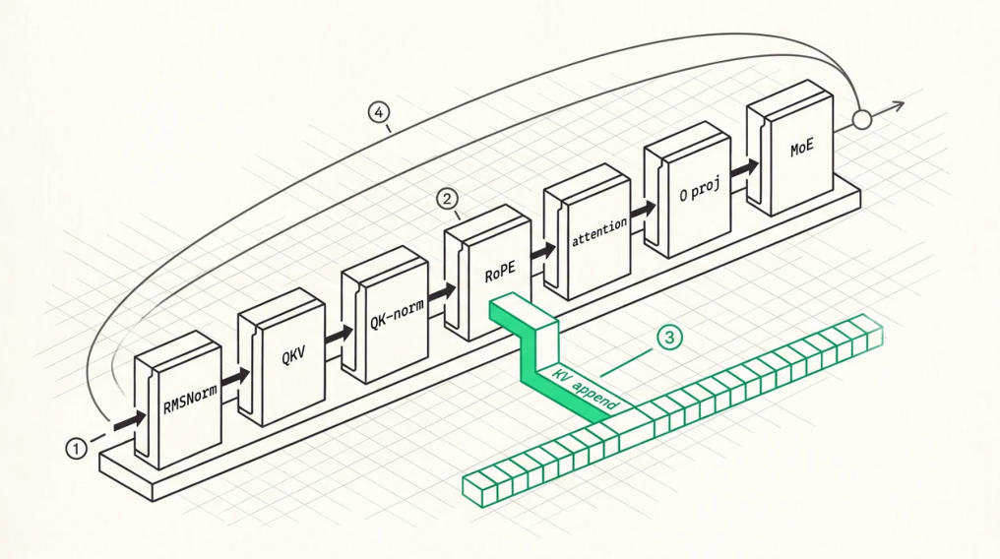

The Decode Layer
The modern decoder layer

0
1The normalisation and projection stages. RMSNorm has to accumulate its sum of squares in FP32, and the epsilon goes inside the square root, because models are trained that way.O
2RoPE, where the pairing convention and the base frequency both have to match the checkpoint. Getting the pairing wrong produces a model that is fluent locally and wrong globally.O
3The KV append branches off after RoPE, not before. The cache stores rotated keys, and caching them unrotated means rotating on every read, which is both slower and a different computation.fe)
4The residual stream runs past everything and should be kept in the widest precision you can afford, because it is the path along which small errors accumulate across 94 layers.
Every box is a kernel or a chain of them. Chapter 10 covered attention and Chapter 24 covers the MoE block, so this chapter is about the connective tissue, the elementwise and normalisation kernels, and about the numerics that decide whether the whole thing is correct. That second part is where the time goes, because these operations are individually trivial and collectively capable of producing a model that runs perfectly and answers slightly worse than it should.
RMSNorm
RMSNorm replaced LayerNorm in essentially every modern model.
RMSNorm(x) = x / sqrt(mean(x²) + ε) · wThere’s no mean subtraction, so it’s one pass and one reduction instead of two. The ε placement matters, because sqrt(mean(x²) + ε) and sqrt(mean(x²)) + ε are different functions and models get trained with the first, and Qwen3 uses ε = 1e-6.
Accumulate the sum of squares in FP32 at minimum. Summing 4,096 squared values in FP16 loses precision badly and in BF16 it’s worse, and this is the most common numerics bug in a hand-written norm kernel because it shows up as a small systematic error that survives every layer rather than as anything obviously broken.
The kernel is memory-bound, reading x once and writing y once, with a ceiling of 2 × hidden × dtype bytes over bandwidth, and a good implementation gets close to it. Which means it should be fused with its neighbours (Chapter 25) rather than optimised in isolation.
QK-norm is worth calling out separately. Several recent models, Qwen3 included, apply RMSNorm to each attention head’s query and key vectors before RoPE, which stabilises training and changes the layer’s kernel graph. It’s a per-head normalisation over the head dimension with its own learned weight, applied to 64 query heads and 4 key heads, and implemented naively as one dispatch per head that’s 68 dispatches per layer for something that should be one. Chapter 25 has the bill.
RoPE
RoPE encodes position by rotating pairs of dimensions.
θ_i = p · base^(−2i/d)
q'[2i] = q[2i]·cos θ_i − q[2i+1]·sin θ_i
q'[2i+1] = q[2i]·sin θ_i + q[2i+1]·cos θ_iFive implementation details decide whether it’s correct.
The pairing convention. Some implementations pair adjacent elements, (2i, 2i+1), and others pair halves, (i, i + d/2). Both exist in the wild and the checkpoint was trained with one of them, so using the other produces a model that generates fluent nonsense, coherent locally and wrong globally, which is a uniquely annoying failure to diagnose.
The base frequency. Qwen3-235B-A22B uses 1e6 in its original release and 5e6 in Instruct-2507. Llama 1 and 2 use 10,000 and Llama 3 raised it to 500,000, with scaling configs on top for the extended variants. Read it from the config and never hard-code it.
Precision. Compute θ and its sine and cosine in FP32 or FP64 and cache them, because computing angles in FP16 at position 1,000,000 loses the low bits of the position outright. FP16 can’t even represent 1,000,001 exactly.
Scaling. If the config specifies YaRN or another scheme (Chapter 14) it changes θ per dimension and adds an attention temperature, and that’s part of the model rather than a serving option.
Apply to Q and K only , never V.
SwiGLU
SwiGLU(x) = SiLU(gate(x)) ⊙ up(x), SiLU(x) = x·σ(x)The gating is elementwise and effectively free, since both projections are computed anyway, and fusing the activation into the epilogue of the up projection saves a full round-trip of the intermediate through HBM. For a hidden size of 4,096 and intermediate 1,536 per expert, that round-trip isn’t negligible when it happens 8 times per layer and 94 times per token.
Numerics, conversion, and rounding
The conversions between storage and compute formats are load-bearing.
FP32 to FP16 or BF16 must round to nearest even. Truncation biases every value toward zero, and a per-layer bias of 1e-4 in a consistent direction accumulates to 1e-2 over 94 layers, because systematic errors add while random ones grow as √n. Round-to-nearest-even is the IEEE default for a reason and hardware conversion instructions implement it, so use them rather than shifting bits yourself.
Subnormals. FP16 subnormals, magnitudes below 6.1e-5, appear in real activations. Flushing them to zero is a legitimate performance choice on some hardware, provided it’s a choice , applied consistently, and reflected in your reference implementation, or your oracle will disagree with your kernel for reasons that aren’t bugs.
Overflow. FP32 values exceeding 65,504 have to saturate to ±inf in FP16 rather than wrapping, which is where BF16 checkpoints bite (Chapter 21).
E8M0 scales. For MXFP4 the block scale is exponent-only, value = 2^(x−127), and you round up when converting a computed scale. Over- estimating the scale shrinks the quantised values, which is safe, while under-estimating causes elements to saturate at the top of the FP4 range, which isn’t. The reverse direction is exact.
Assembling the layer
1. RMSNorm(x) → xn
2. QKV projection (GEMV or GEMM) → q, k, v
3. Per-head QK-norm → q, k
4. RoPE(q, k, position) → q, k
5. Append k, v to the paged KV cache6. Attention (FlashDecoding, paged, GQA) → attn
7. O-projection → o
8. x = x + o (residual)
9. RMSNorm(x) → xn2
10. MoE or dense FFN → ffn
rust
11. x = x + ffn (residual)Two ordering details are easy to get backwards. The KV append at step 5 has to happen after RoPE, because the cache stores rotated keys, and caching pre-RoPE keys means rotating them on every read, which is both slower and a different computation. And the residual stream should be kept in the highest precision you can afford, FP32 being common even when everything else is FP16 or BF16, because it’s the path along which small errors accumulate across 94 layers.
Correctness of the assembled layer depends on all of that being right simultaneously, which is why the per-step f64 oracle of Chapter 36 isn’t optional. As a reference point, mainarch’s assembled Qwen3architecture layer, with hidden 4,096, 64Q/4KV of dimension 128, MoE top-8, and context 2,048,
validates at relative L2 error 3.28e-5 against an f64 reference that mirrors the FP16 datapath and roundtrips through FP16 at each store. That’s the number a correct FP16 layer should produce. 1e-2 means a bug, and 1e-8 means your reference isn’t independent.
Key Concept
The decode layer is the atomic unit of a transformer, and its correctness rests on numerics that are easy to get subtly wrong. RMSNorm accumulating in FP32 with ε inside the square root, RoPE’s pairing convention and base frequency read from the config and computed in FP32, round-to-nearest-even on every narrowing conversion, E8M0 scales rounded up, keys cached after rotation, and the residual stream kept wide. Each of those produces a model that runs, and only some of them produce a model that’s right.
Exercises
Show that a systematic per-layer relative error of 1e-4 accumulates differently from a random one across 94 layers, and estimate both.
Two implementations of RoPE differ only in pairing convention. Describe what the model’s output looks like under the wrong one and why it isn’t obviously broken.
Why must the KV cache store post-RoPE keys? What would change in the attention kernel if it stored preRoPE keys, and what would that cost?
Build: implement RMSNorm with FP16 accumulation and with FP32 accumulation, and measure the relative L2 error of each against an f64 reference for hidden sizes from 1,024 to 16,384.